Was bleibt, was sich ändert
Ausgangspunkt ist das bestehende Design, nicht ein neues. Behalten wird, was schon funktioniert. Geändert wird, was unruhig oder uneinheitlich war.
Vorher und nachher
Echte Screenshots der App auf einem Handy (390 px breit), vorher und mit dem neuen Design.
Playful Start
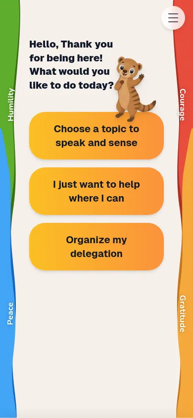
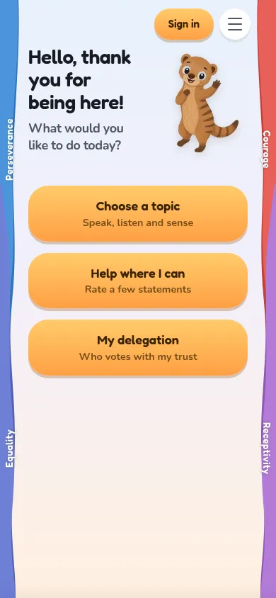
Playful Topic
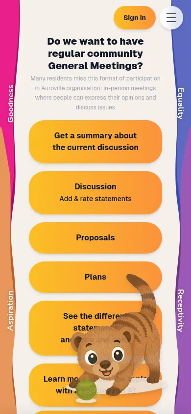
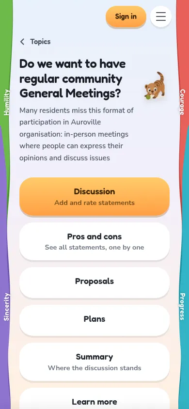
Playful Topics
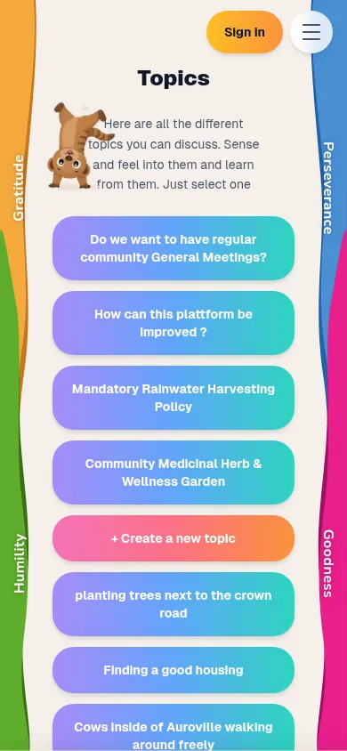
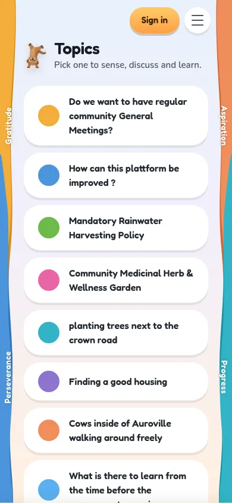
Playful Diskussion
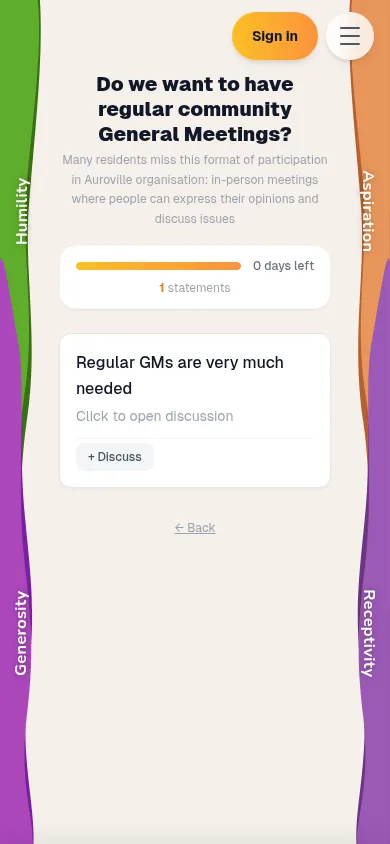
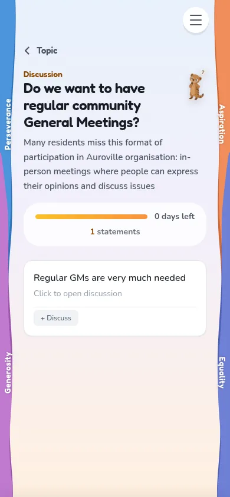
Classic Topics
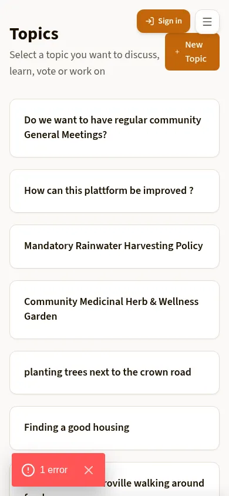
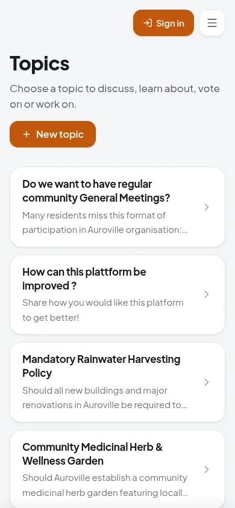
Classic Topic
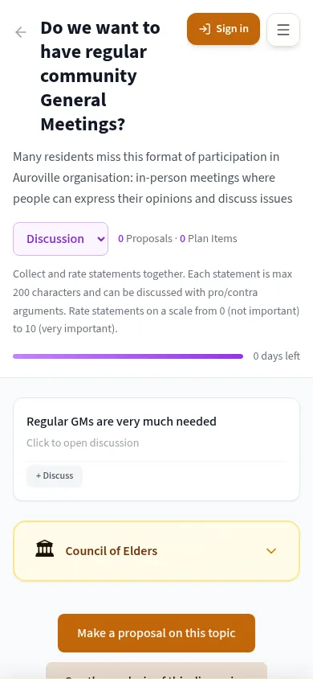
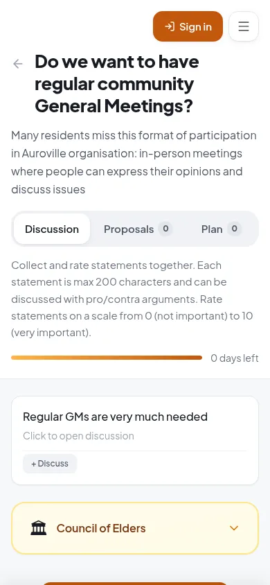
Startseite
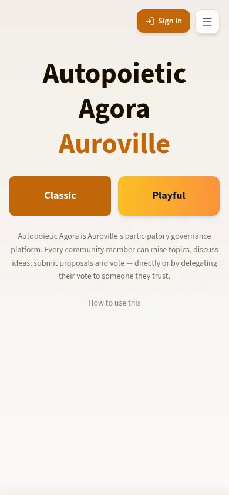
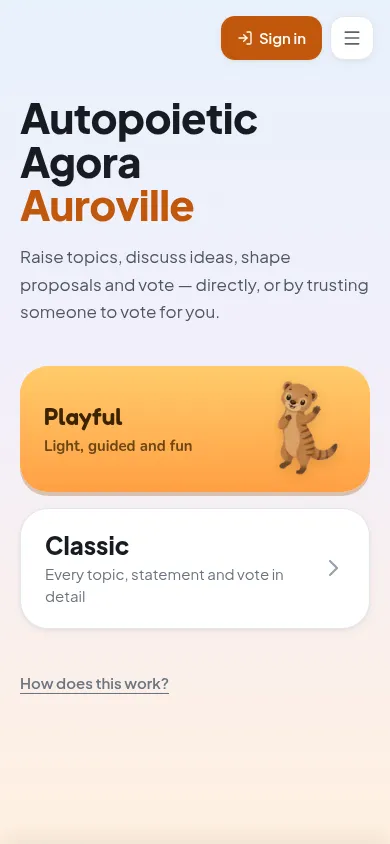
Classic am Computer
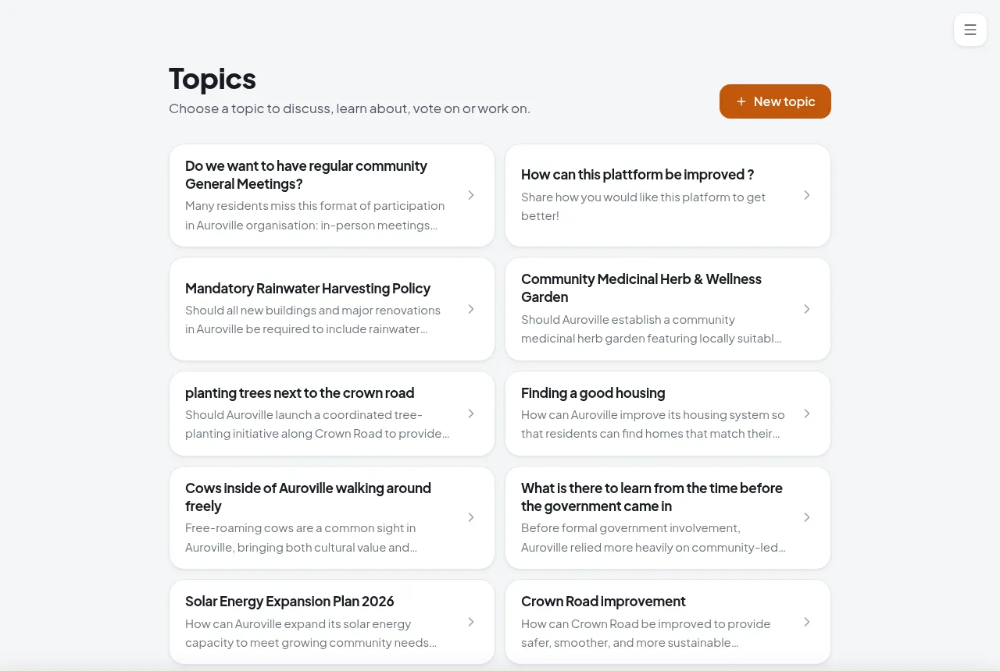
Prinzipien
Fünf Regeln, an denen jede neue Seite gemessen wird.
- Friedlich zuerst. Sanfte Farben, viel Luft, keine grellen Verläufe. Nichts blinkt, nichts drängt.
- Spaß durch Gefühl, nicht durch Lärm. Playful macht Spaß über runde Formen, die verspielte Schrift, den Mungo und Buttons, die sich drücken lassen, nicht über mehr Farben.
- Eine Hauptaktion pro Seite. Nur sie ist gold-orange, alles andere ist weiß.
- Der Mungo begleitet, er verdeckt nie. Er steht im Fluss der Seite, nie schwebend über Inhalten.
- Daumenfreundlich. Alles Antippbare ist mindestens 44 px hoch, mit mindestens 8 px Abstand. Text hat mindestens 4,5:1 Kontrast.
Farben
Morgenhimmel, Sonnenaufgang und die zwölf Tugenden. Alle Textfarben erreichen mindestens 4,5:1 Kontrast.
Die zwölf Tugenden (Seitenstreifen und Topic-Punkte)
Schrift
Jeder Modus hat seine eigene Stimme.
Playful. Fredoka für Titel und Buttons ist rund und fröhlich, Nunito für Text weich und gut lesbar. Titel 26–28 px, Buttons 18 px, Text 15–17 px.
Classic. Modern, klar und freundlich. Titel 32–36 px extra-fett, Topic-Titel 17 px fett, Text 15–17 px. Ersetzt Source Sans 3.
Bausteine
Zum Ausprobieren: Die Buttons lassen sich drücken.
Das Maskottchen in drei Größen
neben Überschriften
Seitenkopf, fertig-Zustände
nur Playful-Start
Maße
| Element | Playful | Classic |
|---|---|---|
| Hauptbutton | min. 64 px hoch, Radius 28 px, Fredoka 18 px | min. 44 px hoch, Radius 14 px, 15 px halbfett |
| Listeneintrag | min. 60 px, weißes Kissen mit Tugend-Punkt | min. 72 px, weiße Karte, Radius 20 px, Vorschau 2 Zeilen |
| Abstand zwischen Buttons | 12–16 px | 12 px |
| Seitenbreite | max. 384 px Inhalt zwischen 28 px Tugend-Streifen | max. 896 px, auf großen Bildschirmen zwei Spalten |
| Zurück | „‹ Topics“ oben links, 44 px hoch | Pfeil links neben dem Titel |